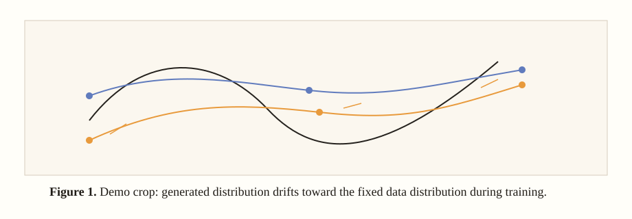

Start Here

What this block demonstrates
- One-command launch: a paper URL can create a local reading room.
- Paper metadata: the title area shows authors instead of filesystem paths.
- HTML-first study: equations, derivations, dependencies, and confusion repairs are appended as blocks.
- Crop workflow: PaperMentor can produce a crop preview, then attach the exact source figure.
Try it with node scripts/papermentor-session.mjs launch https://arxiv.org/pdf/2602.04770 --open.